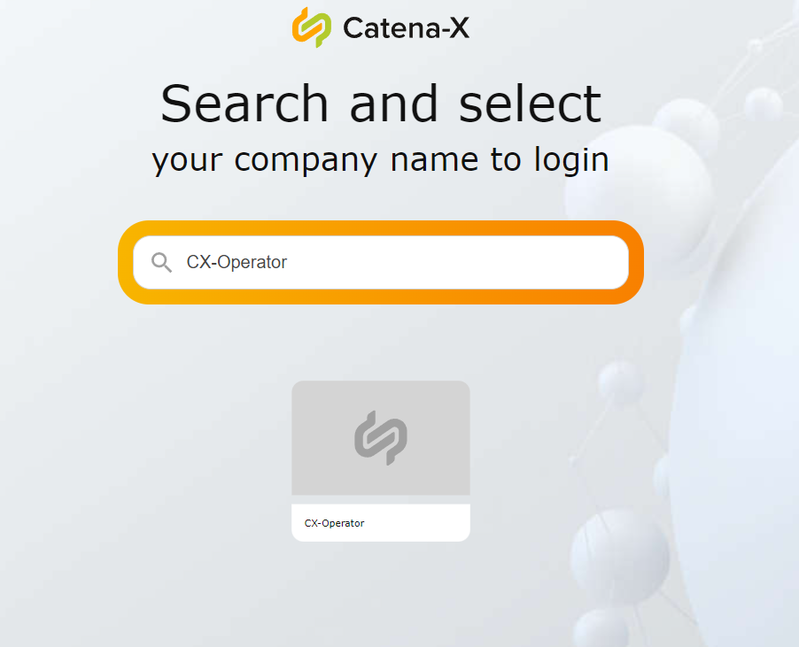
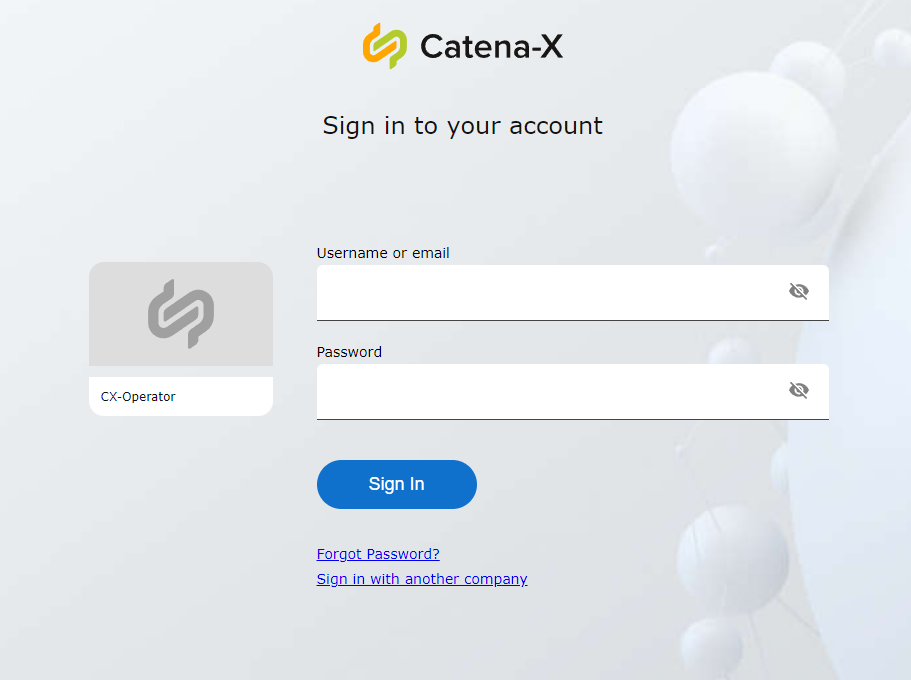
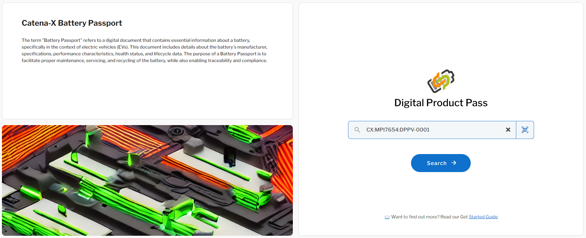
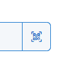
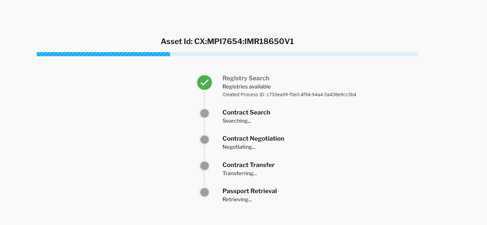
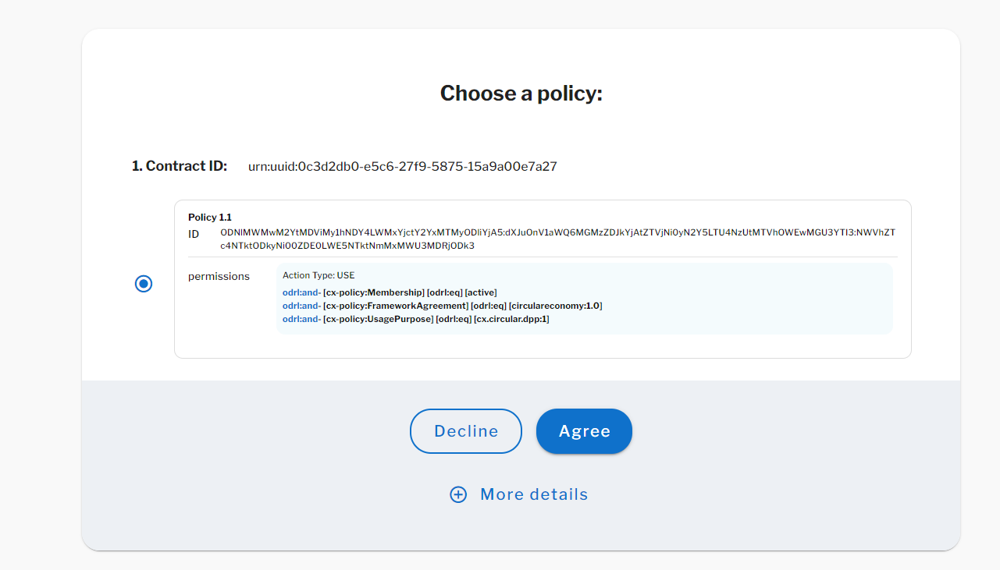
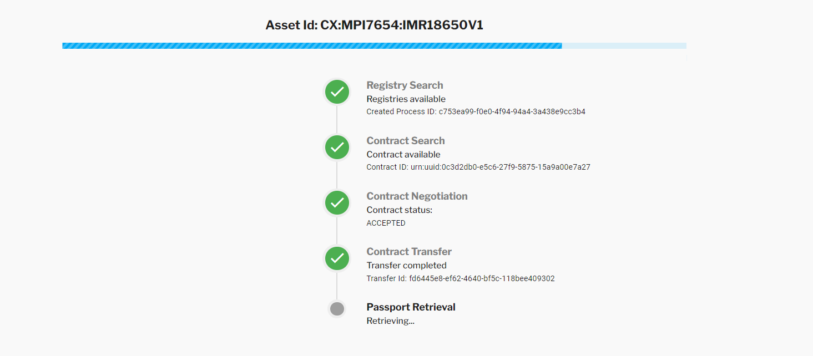
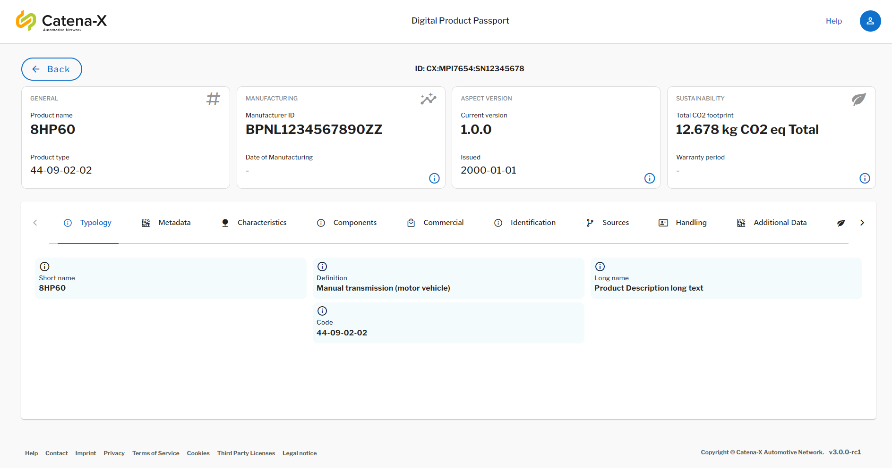
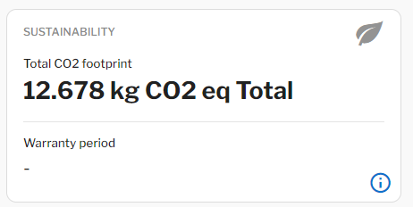
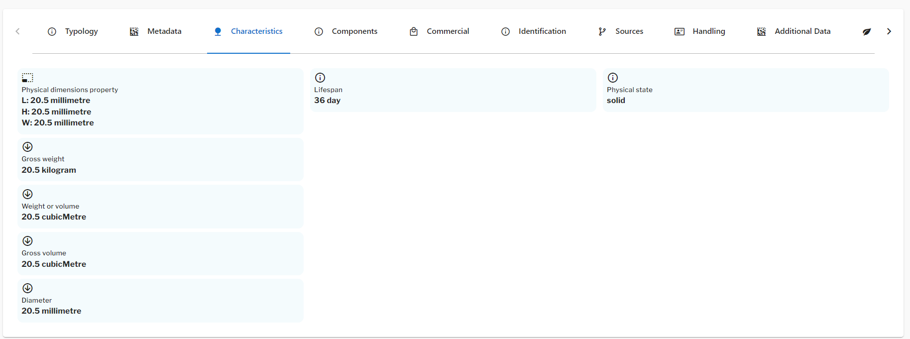

DPP Consumption Guide¶
Deprecated
This tutorial is kept for reference. It may not match the current Eclipse Tractus-X release. All tutorials
This guide provides a simple way of accessing the digital product pass consumer application and retrieving data from the network scanning a QR code or introducing an ID.
DATA CONSUMER DPP APP ___________________
| ___________________ __________________ | | |
| | | | | | --> | |
| | DPP Frontend | <---> | DPP Backend | | | DATA PROVIDER |
| |___________________| |__________________| | <-- | |
| | |___________________|
Prerequisites¶
You must have the following tools installed and configured:
- DPP Application with Backend and Frontend components deployed.
- Login credentials to the DPP Frontend component
- Web Browser
- Catena-X Central Service Running (Federated IAM, Discovery Finder, BPN Discovery and EDC Discovery)
Login in the Frontend Application¶
Introduce the DPP Application host url in the browser:
You will be redirected to:
And a login page from Catena-X will pop up. To perform the login follow this steps:
1º Introduce Company Name¶

2º Introduce Test Credentials¶
The credentials will be provided in the workshop

3º A Search by ID¶
Change the <manufacturerPartId> and <partInstanceId> to the actual values in the part specification.

And click in "SEARCH" to start the search process!
3º B Scan an existing QR Code¶
For scanning the QR code just click in the button with the camera icon:

Give permissions to the camera, and position the window over the QR code frame.
5º Wait a few seconds for the policy selection pop-up to appear¶
When the digital twin registries are being searched in the complete network, the digital product pass will call the following service to find where the digital twin registy with the digital twin data is located:

This steps are done:
-
1º CX-0053 Discovery Finder API : eclipse-tractusx/sldt-discovery-finder
-
2º CX-0053 BPN Discovery API : eclipse-tractusx/sldt-bpn-discovery
-
3º CX-0001 EDC Discovery API : eclipse-tractusx/portal-backend
-
4º -> Search for digital twin in the registries found
-
5º -> Retrieve digital twin and find submodel for the digital product pass.
-
6º -> Query with the EDC Consumer the Catalog from the EDC Provider looking for the asset
- (This information is found in the Digital Twin)
Once the asset policy is found you will get a pop-up similar to this one:

6º Agree on the policies¶
Click on agree to accept the policy you have selected:
Important
The new Digital Product Pass version (v3.0.0) that will be released in R24.05 allows you to configure the policies in the Backend application. There is a policy configuration guide that can help you understanding this better!
7º Wait until contract negotiation is done¶
In some seconds it should start updating with the latest status of your application.

8º Visualize the passport!!!¶

Look for the PCF Information¶

Check characteristics and many more!¶

Congratulations! Now you are able to access the information regarding digital product passports and many more!
Tip
Other models like the Battery Passport and the Transmission Passport are also available to be visualized in the app. You can follow the CX-0096 Digital Product Pass Triangle Standard to configure the other models in the digital twin. For providing data read the Data Provision Guide
NOTICE¶
This work is licensed under the CC-BY-4.0.
- SPDX-License-Identifier: CC-BY-4.0
- SPDX-FileCopyrightText: 2024 BMW AG
- SPDX-FileCopyrightText: 2024 CGI Deutschland B.V. & Co. KG
- SPDX-FileCopyrightText: 2024 Contributors to the Eclipse Foundation
- Source URL: https://github.com/eclipse-tractusx/digital-product-pass